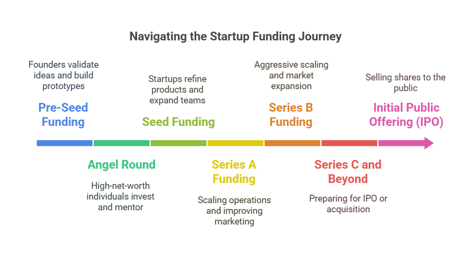

Guide to Startup Funding Stages: A Beginner's Guide for Founders
Funding is a crucial aspect of building and scaling a startup. For first-time founders, understanding different funding stages can be overwhelming. Each stage of funding plays a unique role in helping a startup move from an idea to a profitable business. Some startups may go through all the stages, while others may skip some depending on their business model, market conditions, and financial strategy.
This guide provides a comprehensive breakdown of each funding stage, from the earliest investment rounds to going public, helping entrepreneurs make informed financial decisions.

At the pre-seed stage, startups are in their infancy. Funding usually comes from:
The primary goal of pre-seed funding is to validate an idea, conduct market research, and build an initial prototype. Many startups at this stage operate on a tight budget and focus on proof of concept rather than generating immediate revenue.
An angel round falls between pre-seed and seed funding. It typically involves investments from high-net-worth individuals (angel investors) who believe in the startup's potential.
Angel investors offer more than just capital; they bring mentorship, industry connections, and strategic advice. They often invest in startups with promising founders and innovative ideas, even if the product is still in its early stages.
Angel rounds can sometimes act as bridge funding before a larger seed round, providing startups with financial breathing room to develop their product further.
Seed funding is the first official round of investment and is crucial for:
Seed funding sources include angel investors, venture capital (VC) firms, and startup accelerators. At this stage, startups are expected to demonstrate some early traction, such as user engagement or initial revenue streams.
Startups typically raise between $500,000 to $2 million in seed funding, though amounts can vary widely depending on industry and location. Investors look for a clear vision, scalable potential, and a strong founding team.
Once a startup has some traction (users, revenue, or product validation), it may seek Series A funding to:
Venture capital firms are the main investors at this stage, and startups need a clear path to revenue growth. Startups are expected to refine their business model, expand their customer base, and optimize product-market fit.
Series A rounds typically raise between $2 million and $15 million, with investors seeking evidence of a repeatable, scalable business model.
By the time a startup reaches Series B, it has a proven business model and is ready to scale aggressively. Funding is used to:
Series B funding enables companies to establish themselves as market leaders, often raising between $10 million and $50 million. Investors at this stage look for startups that have successfully scaled revenue generation and have strong operational efficiency.
Startups that continue to scale may raise additional rounds (Series C, D, and beyond) to support:
These rounds involve larger venture capital firms, private equity investors, and hedge funds. Series C funding can range from $50 million to hundreds of millions, depending on market opportunities.
By Series D and beyond, startups are often considered late-stage companies, preparing for IPO or acquisition. These later rounds focus on maximizing valuation, strengthening competitive advantages, and expanding international presence.
Bridge financing is short-term funding used when a startup needs capital before its next major funding round or an IPO. This funding helps maintain cash flow and can come in the form of convertible debt or equity.
Startups often use bridge funding to cover operational costs, ensure continuity of growth, or reach critical milestones before securing a larger investment.
Venture debt is a form of non-dilutive financing where startups borrow money instead of selling equity. It is often used to extend a startup's runway between funding rounds.
Venture debt lenders typically look for startups with strong revenue streams but may offer more flexible repayment terms compared to traditional bank loans.
Mature startups that choose not to go public can raise money from private equity firms to fund large-scale expansions or restructuring.
Private equity investors focus on established companies with predictable cash flows, aiming to increase profitability before exiting through a sale or merger.
An IPO is when a startup sells shares to the public on a stock exchange. This allows the company to raise significant capital and provides an exit for early investors.
The IPO process requires extensive regulatory compliance, financial auditing, and investor roadshows to attract institutional buyers. Companies that go public gain increased credibility but must meet ongoing transparency and governance requirements.
Instead of going through an IPO, some startups opt to merge with a SPAC, a publicly traded company formed specifically to acquire a private company and take it public.
SPAC mergers provide a faster route to public markets, with fewer regulatory hurdles and lower costs compared to traditional IPOs. However, they require strategic alignment with the acquiring SPAC entity.
Every startup's journey is different, and not all companies go through every funding stage. Some businesses achieve profitability early and never need external funding, while others go through multiple rounds to scale quickly.
By understanding these funding stages, founders can make informed decisions on how and when to raise capital, positioning their startups for long-term success. With a well-thought-out fundraising strategy, entrepreneurs can align financial growth with operational milestones, ensuring sustainable success in the competitive startup ecosystem.